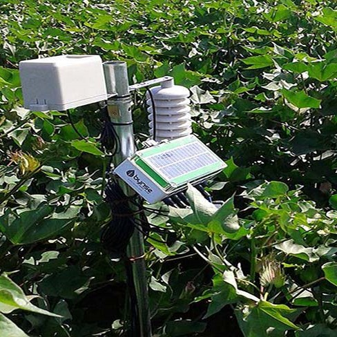
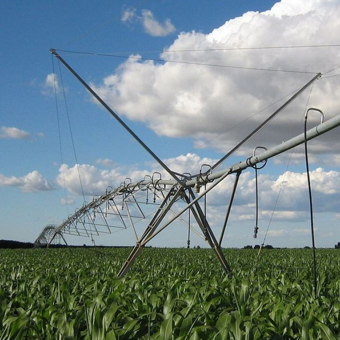
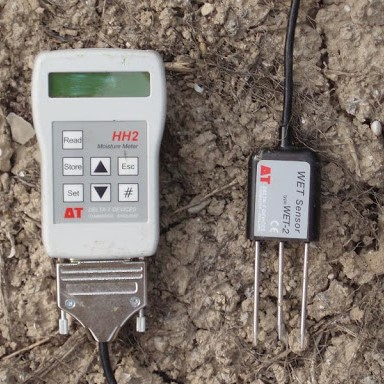
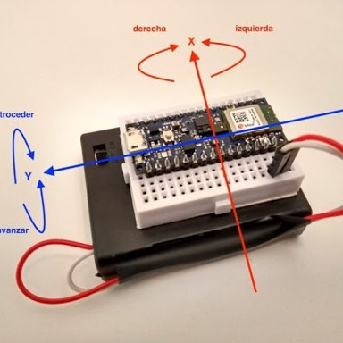

Líderes en control de precisión
Dispón de la capacidad de monitorizar el estado de tu plantación
¿Qué sensores ofrecemos?
Sensor de temperatura
El sensor evalua, mide y recopila la temperatura
ambiental, ajustando el tiempo entre cada medición.
Así los agricultores pueden determinar y variar el trabajo que realizan
según las condiciones en las
que se encuentre la
sonda, sin tener que
estar pendiente se la plantación en cada momento.
Tiene una efectividad de entre -15 y 60 ºC.
Sensor de humedad
El sensor está diseñado para realizar un control a tiempo real sobre
la humedad y estado de las plantas, permitiendo así
a los agricultores
regular el riego de manera más eficiente, sin sufrir excesos con el agua o la alimentación.
Siendo avisados de los diferentes cambios que se pudan encontrar en la
plantació, sin necesidad de que alguien este en el lugar del cultivo.

Sensor de salinidad

Este sensor está diseñado para controlar el nivel de salinidad de los pozos de riego de las
diferentes plantaciones.
Así ayudando a los agricultores a saber que pozos pueden ser utilizados en cada momento,
con la facilidad de comprobarlo
al alcance de tu mano, y además mejorar la producción.
Sensor de iluminación
El sensor está diseñado para controlar los niveles de luminosidad, y así determinar si la
sonda se encuentra en luz artificial, luz natural o si es de noche o hay luz apagada.
Para mejorar el rendimiento de los invernaderos, así como saber las
mejores condiciones de crecimiento de los cultivos

Acelerómetro

El sensor está diseñado para detectar la aceleración puntual sufrida en cada uno de los ejes del mismo.
Estos cambios de aceleración proporcionan al sensor información a cerca del movimiento
que se está describiendo y que
le afectan en función del tiempo. Informando al agricultor de un posible hurto de la sonda.